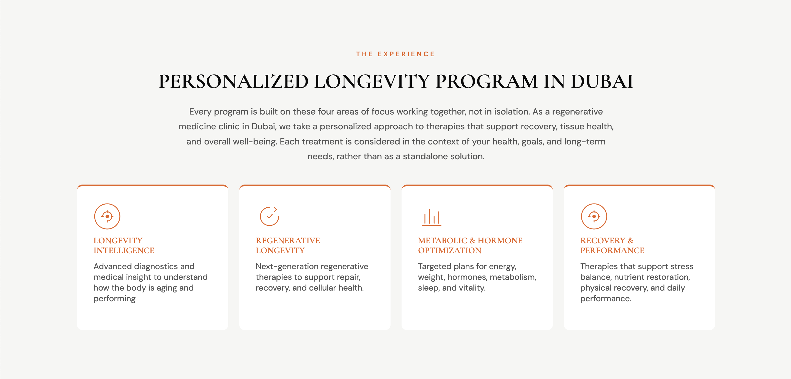
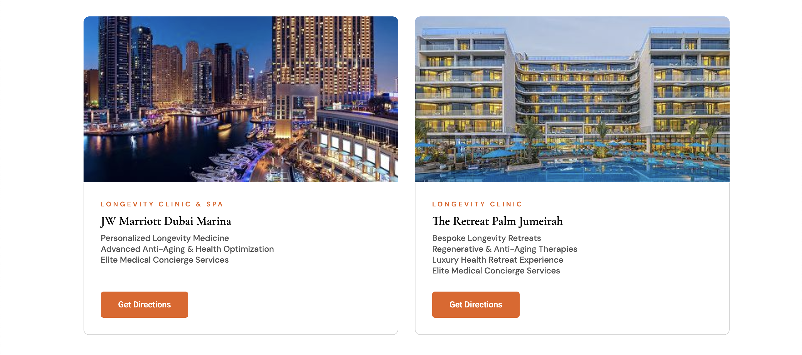
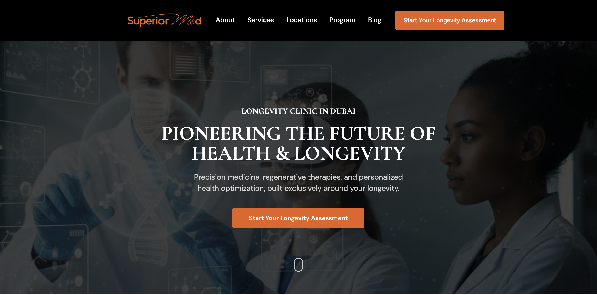

SUPERIORMED
SuperiorMed is Dubai’s premier wellness and anti-aging center, offering precision medicine, regenerative therapies, and personalized health optimization. Located in the prestigious JW Marriott Hotel Marina, they required a complete website redesign to reflect their elite positioning.
The goal was to craft a digital presence that perfectly balanced advanced medical science with the refined elegance of a luxury spa retreat. I was brought on to lead both the UI/UX redesign and the frontend development to ensure a seamless, high-end user journey.
The core UX challenge was organizing highly complex medical services—such as DNA analysis, epigenetic testing, biomarker profiling, and bespoke longevity retreats—into an interface that felt calming, sophisticated, and easy to navigate.
I established a visual hierarchy rooted in minimalism, using a refined color palette, generous whitespace, and elegant typography. The user flow was engineered to build trust and effortlessly guide prospective clients toward booking their initial longevity assessment.
Key UX Initiatives:
- Trust & Credibility: Designing clear, authoritative service pages for complex offerings like Oligoscan analysis and regenerative therapies.
- Frictionless Conversion: Strategic placement of "Start Your Longevity Assessment" CTAs without disrupting the serene aesthetic.
- Patient Education: Implementing interactive, easily digestible FAQ accordions to handle inquiries regarding insurance, international medical tourism, and treatment safety.


Moving from design to development, my focus was on performance, fluidity, and cross-device responsiveness. The frontend was built to feel as premium as the clinic itself, featuring smooth transitions, subtle hover states, and fast load times.
I ensured the architecture was scalable, allowing the SuperiorMed team to easily update retreat packages, add new wellness programs, and manage booking inquiries effectively.

The redesigned platform successfully elevated SuperiorMed’s digital presence, perfectly aligning it with their reputation as Dubai's premier longevity clinic. The new live site effectively drives high-value bookings for personalized health optimizations and wellness retreats, serving as a powerful tool for global client acquisition and medical tourism.